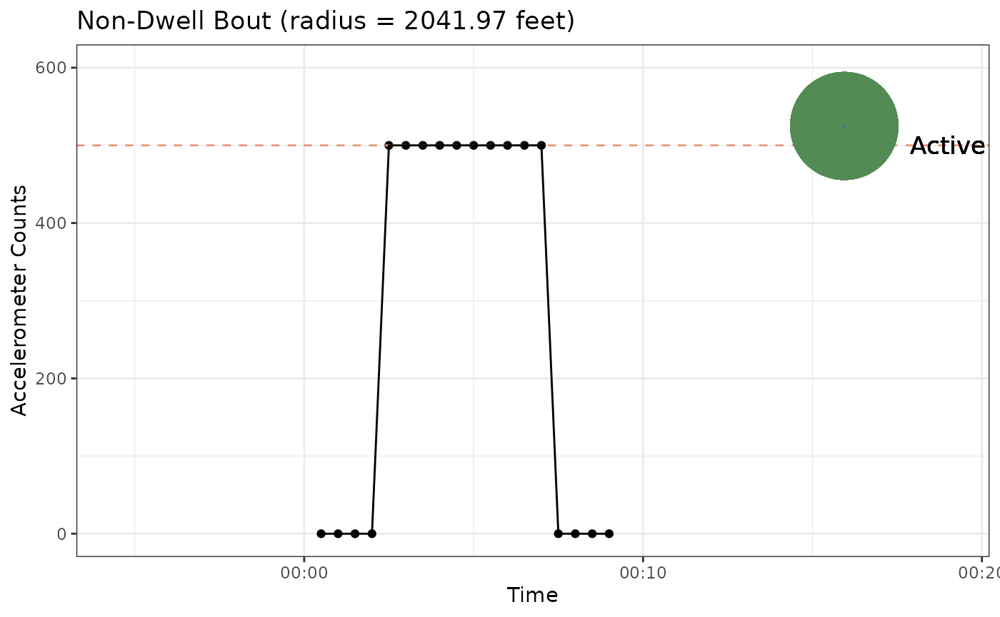

walkboutr package will process GPS and accelerometry
data and create two different outputs:
- Full dataset: This dataframe contains all of the original data (latitude, longitude, activity counts) as well as the epoch start time. This time will match the times associated with the accelerometry data, and the GPS data have been matched up to the closest accelerometry epochs. The time variable returned, thus, reflects that of the accelerometry data. Note: GPS data are assigned to an epoch start time by rounding down the time associated with the GPS datapoint to the nearest epoch start time. For example, if epochs in the accelerometry data are 30 seconds, the time associated with a GPS data point will be rounded down to the nearest 30-second increment.
- Summarized dataset: This dataframe does not contain any of the original GPS/accelerometry data, and is thus completely de-identified and shareable. The output contains one row for each bout (walking or otherwise) as well as information on the median speed for that bout, whether there was a complete day worth of data for the bout, the start time of the bout, the duration in minutes, and the bout category. More details on bout category can be found below.
First we will generate some sample data:
gps_data <- generate_walking_in_seattle_gps_data()
accelerometry_counts <- make_full_day_bout_without_metadata()Now that we have sample data, we can look at how
walkboutr generates bouts:
walk_bouts <- identify_walk_bouts_in_gps_and_accelerometry_data(gps_data, accelerometry_counts)
summary_walk_bouts <- summarize_walk_bouts(walk_bouts)The bouts identified look like this:
| bout | bout_category | activity_counts | time | non_wearing | complete_day | latitude | longitude | speed |
|---|---|---|---|---|---|---|---|---|
| 1 | non_walk_slow | 500 | 2012-04-07 00:03:30 | FALSE | TRUE | 47.62508 | 122.3510 | 0.9995464 |
| 1 | non_walk_slow | 500 | 2012-04-07 00:02:30 | FALSE | TRUE | 47.61874 | 122.3446 | 0.8348447 |
| 1 | non_walk_slow | 500 | 2012-04-07 00:03:00 | FALSE | TRUE | 47.62199 | 122.3479 | 0.6335497 |
| 1 | non_walk_slow | 500 | 2012-04-07 00:05:30 | FALSE | TRUE | 47.64308 | 122.3690 | 0.9944386 |
| 1 | non_walk_slow | 500 | 2012-04-07 00:06:00 | FALSE | TRUE | 47.64769 | 122.3736 | 1.2970529 |
| 1 | non_walk_slow | 500 | 2012-04-07 00:06:30 | FALSE | TRUE | 47.65402 | 122.3799 | 1.0669589 |
We can now use the second function to generate our summarized dataset, which is de-identified and shareable:
| bout | median_speed | complete_day | bout_start | duration | bout_category |
|---|---|---|---|---|---|
| 1 | 0.9895184 | TRUE | 2012-04-07 00:02:30 | 4304.5 | non_walk_slow |
-
Walk bout a
walk_boutis defined based on the scientific literature as: Assuming a greedy algorithm and consideration of inactive time as consecutive, a walk bout is any contiguous period of time where the active epochs have accelerometry counts above the minimum threshold of 500 CPE (to allow for capture of light physical activity such as slow walking) and the time period:- Begins with an active epoch preceded by a non-walkbout
- Ends with an active epoch followed by at least 4 consecutive 30-second epochs of inactivity
- Contains at least 10 cumulative 30-second epochs of activity
- Is not a dwell bout
- Bout median speed based on GPS data falls between 2 and 6 kilometers
per hour (our reference walking speeds)
Accordingly, the following non-walk-bouts are defined as:
-
Non-walk bout due to slow pace a
non_walk_slowbout is a bout where the median speed is too slow to be considered walking. -
Non-walk bout due to fast pace a
non_walk_fastbout is a bout where the median speed is too fast to be considered walking. -
Non-walk bout due to high CPE a
non_walk_too_vigorousbout is a bout where the average CPE is too high to be considered walking (ex. running or biking). -
Dwell bout a
dwell_boutis a bout where the radius of GPS points is below our threshold for considering someone to have stayed in one place. -
Non-walk bout due to incomplete GPS coverage a
non_walk_incomplete_gpsbout is a bout where the GPS coverage is too low to be considered complete.
In order to better visualize our bouts, we can also plot the accelerometry counts and GPS radius.
accelerometry_counts <- make_smallest_bout_without_metadata()
gps_data <- generate_walking_in_seattle_gps_data()
generate_bout_plot(accelerometry_counts, gps_data, 1)